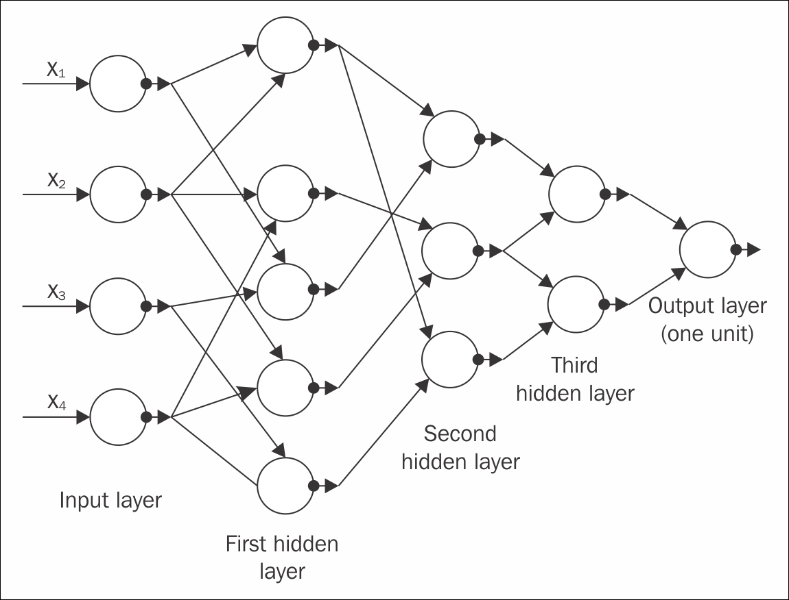
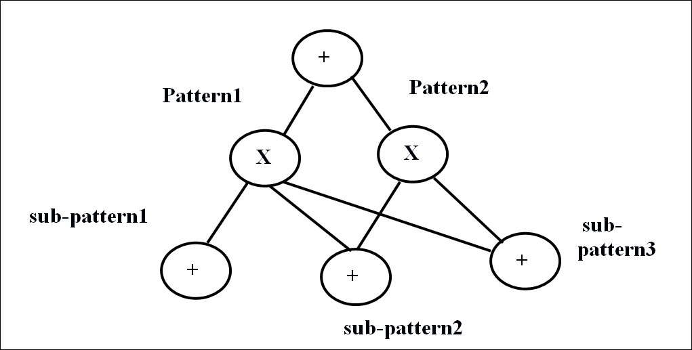

Artificial neural networks in machine learning are often termed as new generation neural networks by many researchers. Most of the learning algorithms that we hear about were essentially built so as to make the system learn exactly the way the biological brain learns. This is how the name Artificial neural networks came about! Historically, the concept of deep learning emanated from Artificial neural networks (ANN). The practice of deep learning started back in the 1960s, or possibly even earlier. With the rise of deep learning, ANN, has gained more popularity in the research field.
Multi-Layer Perceptron (MLP) or feed-forward neural networks with many hidden intermediate layers which are referred to as deep neural networks (DNN), are some good examples of the deep architecture model. The first popular deep architecture model was published by Ivakhnenko and Lapa in 1965 using supervised deep feed-forward multilayer perceptron [17].

Figure 1.15: The GMDH network has four inputs (the component of the input vector x), and one output y ,which is an estimate of the true function y= f(x) = y
Another paper from Alexey Ivakhnenko, who was working at that time on a better prediction of fish population in rivers, used the group method of data handling algorithm (GMDH), which tried to explain a type of deep network with eight trained layers, in 1971. It is still considered as one of most popular papers of the current millennium[18]. The preceding Figure 1.15 shows the GMDH network of four inputs.
Going forward, Backpropagation (BP), which was a well-known algorithm for learning the parameters of similar type of networks, found its popularity during the 1980s. However, networks having a number of hidden layers are difficult to handle due to many reasons, hence, BP failed to reach the level of expectation [8] [19]. Moreover, backpropagation learning uses the gradient descent algorithm, which is based on local gradient information, and these operations start from some random initial data points. While propagating through the increasing depth of networks, these often get collected in some undesired local optima; hence, the results generally get stuck in poor solutions.
The optimization constraints related to the deep architecture model were pragmatically reduced when an efficient, unsupervised learning algorithm was established in two papers [8] [20]. The two papers introduced a class of deep generative models known as a Deep belief network (DBN).
In 2006, two more unsupervised deep models with non-generative, non-probabilistic features were published, which became immensely popular with the researcher community. One is an energy-based unsupervised model [21], and the other is a variant of auto-encoder with subsequent layer training, much like the previous DBN training [3]. Both of these algorithms can be efficiently used to train a deep neural network, almost exactly like the DBN.
Since 2006, the world has seen a tremendous explosion in the research of deep learning. The subject has seen continuous exponential growth, apart from the traditional shallow machine learning techniques.
Based on the learning techniques mentioned in the previous topics of this chapter, and depending on the use case of the techniques and architectures used, deep learning networks can be broadly classified into two distinct groups.
Many deep learning networks fall under this category, such as Restricted Boltzmann machine, Deep Belief Networks, Deep Boltzmann machine, De-noising Autoencoders, and so on. Most of these networks can be used to engender samples by sampling within the networks. However, a few other networks, for example sparse coding networks and the like, are difficult to sample, and hence, are, not generative in nature.
A popular deep unsupervised model is the Deep Boltzmann machine (DBM) [22] [23] [24] [25]. A traditional DBM contains many layers of hidden variables; however, the variables within the same layer have no connections between them. The traditional Boltzmann machine (BM), despite having a simpler algorithm, is too much complex to study and very slow to train. In a DBM, each layer acquires higher-order complicated correlations between the responses of the latent features of the previous layers. Many real-life problems, such as object and speech recognition, which require learning complex internal representations, are much easier to solve with DBMs.
A DBM with one hidden layer is termed as a Restricted Boltzmann machine (RBM). Similar to a DBM, an RBM does not have any hidden-to-hidden and visible-to-visible connections. The crucial property of an RBM is reflected in constituting many RBMs. With numerous latent layers formed, the feature activation of a previous RBM acts as the input training data for the next. This kind of architecture generates a different kind of network named Deep belief network (DBN). Various applications of the Restricted Boltzmann machine and Deep belief network are discussed in detail in Chapter 5 , Restricted Boltzmann Machines.
A primary component of DBN is a set of layers, which reduces its time complexity linear of size and depth of the networks. Along with DBN property, which could overcome the major drawback of BP by starting the training from some desired initialization data points, it has other attractive catching characteristics too. Some of them are listed as follows:
One more deep generative network, which can be used for unsupervised (as well as supervised) learning is the sum-product network (SPN) [26], [27]. SPNs are deep networks, which can be viewed as directed acyclic graphs, where the leaves of the graph are the observed variables, and the internal nodes are the sum and product operations. The 'sum' nodes represent the mixture models, and the 'product' nodes frame the feature hierarchy. SPNs are trained using the expectation-maximization algorithm together with Back propagation. The major hindrance in learning SPNs is that the gradient rapidly diminishes when moving towards the deep layers. Specifically, the standard gradient descent of the regular deep neural networks generated from the derivative of the conditional likelihood, goes through the tribulation. A solution to reduce this problem is to substitute the marginal inference with the most probable state of the latent variables, and then disseminate the gradient through this. An exceptional outcome on small-scale image recognition was presented by Domingo and Gens in [28]. The following Figure 1.16 shows a sample SPN network for better understanding. It shows a block diagram of the sum-product network:

Figure 1.16: Block diagram of sum-product network
Another type of popular deep generative network, which can be used as unsupervised (as well as supervised) learning, is the Recurrent neural network (RNN). The depth of this type of network directly depends on the length of the input data sequence. In the unsupervised RNN model, experiences from previous data samples are used to predict the future data sequence. RNNs have been used as an excellent powerful model for data sequencing text or speech, however, their popularity has recently decreased due to the rise of vanishing gradient problems [29] [16]. Using stochastic curvature estimates, Hessian-free optimization [30] has somewhat overcome the limitations. Recently, Bengio et al. [31] and Sutskever [32] have come out with different variations to train the generating RNNs, which outperform the Hessian-free optimization models. RNN is further elucidated in this book in Chapter 4 , Recurrent Neural Network.
Among the other subclasses of unsupervised deep networks, the energy-based deep models are mostly known architecture [33] [34]. A typical example of the unsupervised model category of deep networks is deep autoencoder. Most of the variants of deep autoencoder are generative in nature; however, the properties and implementations generally vary from each other. Popular examples are predictive sparse coders, Transforming Autoencoder, De-noising Autoencoder and their stacked versions, and so on. Auto-encoders are explained in detail in Chapter 6 , Autoencoders.
Most of the discriminative techniques used in supervised learning are shallow architectures such as Hidden Marcov models [35], [36], [37], [38], [39], [40], [41] or conditional random fields. However, recently, a deep-structured conditional random field model has evolved, by passing the output of every lower layer as the input of the higher layers. There are multiple versions of deep-structured conditional random fields which have been successfully accomplished to for natural language processing, phone recognition, language recognition, and so on. Although discriminative approaches are successful for deep-architectures, they have not been able to reach the expected outcome yet.
As mentioned in the previous section, RNNs have been used for unsupervised learning. However, RNNs can also be used as a discriminative model and trained with supervised learning. In this case, the output becomes a label sequence related to the input data sequence. Speech recognition techniques have already seen such discriminative RNNs a long time ago, but with very little success. Paper [42] shows that a Hidden Marcov Model was used to mutate the RNN classification outcome into a labelled sequence. But unfortunately, the use of Hidden Marcov model for all these reasons did not take enough advantage of the full capability of RNNs.
A few other methods and models have recently been developed for RNNs, where the fundamental idea was to consider the RNN output as some conditional distributions, and distribute all over the possible input sequences [43], [44],[45],[46]. This helped RNNs to undergo sequence classification while embedding the long-short-term-memory to its model. The major benefit was that it neither required the pre-segmentation of the training dataset, nor the post-processing of the outputs. Basically, the segmentation of the dataset is automatically performed by the algorithm, and one differentiable objective function could be derived for optimization of the conditional distributions across the label sequence. The effectiveness of this type of algorithm is extensively applicable for handwriting recognition operations.
One more popular type of discriminative deep architecture is the convolutional neural network (CNN). In CNN, each module comprises of a convolutional layer and one pooling layer. To form a deep model, the modules are generally stacked one on top of the other, or with a deep neural network on the top of it. The convolutional layer helps to share many weights, and the pooling layer segregates the output of the convolutional later, minimizing the rate of data from the previous layer. CNN has been recognized as a highly efficient model, especially for tasks like image recognition, computer vision, and so on. Recently, with specific modifications in CNN design, it has also been found equally effective in speech recognition too. Time-delay neural network (TDNN) [47] [48], originated for early speech recognition, is a special case for convolutional neural network, and can also be considered its predecessor.
In this type of model, the weight sharing is limited to only time dimension, and no pooling layer is present. Chapter 3 , Convolutional Neural Networks discusses the concept and applications of CNNs in depth.
Deep learning, with its many models, has a wide range of applications too. Many of the top technology companies, such as Facebook, Microsoft, Google, Adobe, IBM, and so on are extensively using deep learning. Apart from computer science, deep learning has also provided valuable contributions to other scientific fields as well.
Modern CNNs used for object recognition have given a major insight into visual processing, which even neuroscientists can explore further. Deep learning also provides the necessary functional tools for processing large-scale data, and to make predictions in scientific fields. This field is also very successful in predicting the behaviors of molecules in order to enhance the pharmaceutical researches.
To summarize, deep learning is a sub-field of machine learning, which has seen exceptional growth in usefulness and popularity due to its much wider applicability. However, the coming years should be full of challenges and opportunities to ameliorate deep learning even further, and explore the subject for new data enthusiasts.
To help the readers to get more insights into deep learning, here are a few other excellent and frequently updated reading lists available online: http://deeplearning.net/tutorial/ http://ufldl.stanford.edu/wiki/index.php/UFLDL_Tutorial http://deeplearning.net/reading-list/